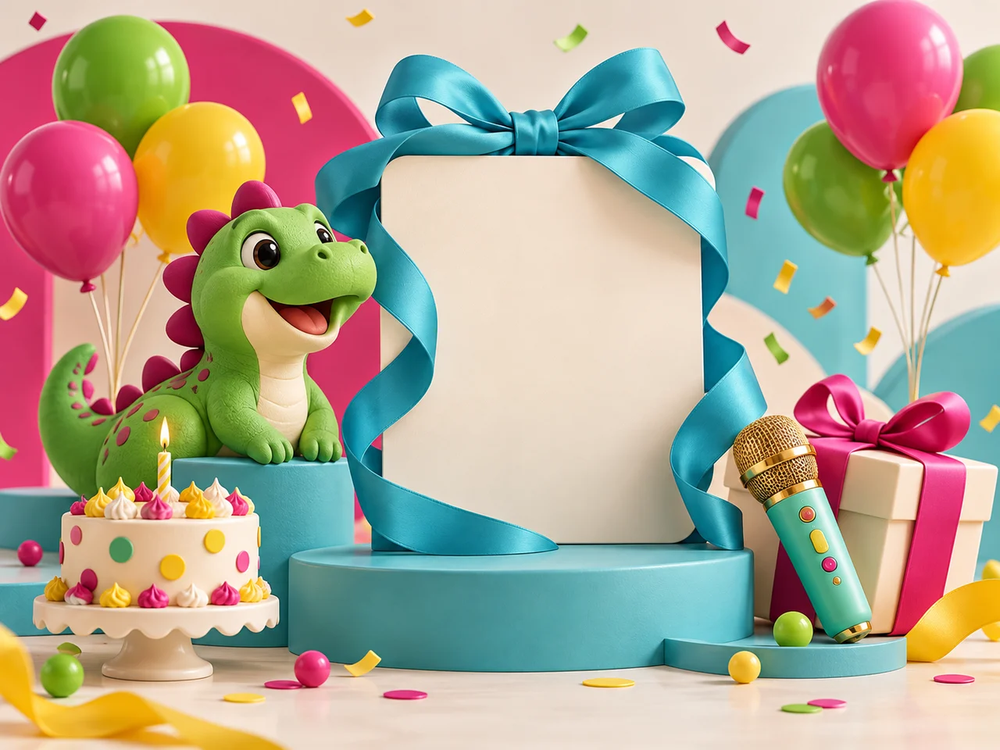
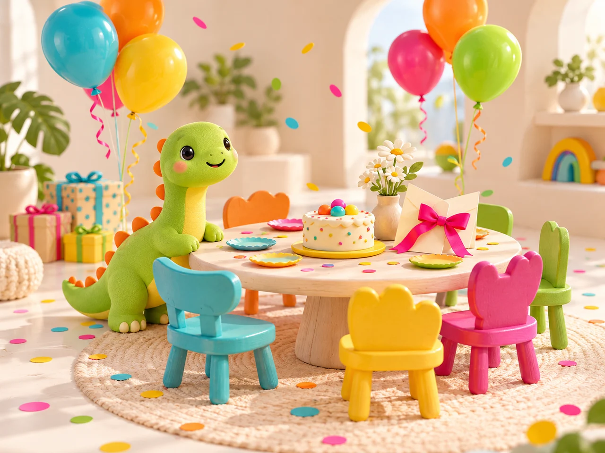

Diverdino Kids
Cumpleaños y aventuras infantiles.
Preparar mi celebración ↗Cumpleaños infantiles, reuniones familiares y planes con amigos. Un espacio en Elche para estar juntos y dar juego a los peques.
El mismo lugar, muchas formas de vivirlo. Elige la celebración que tienes en mente y empecemos a darle forma.
Cumpleaños y aventuras infantiles.
Preparar mi celebración ↗
Tus 16. Tus 18. Tu manera de celebrar.
Preparar mi celebración ↗
Reuniones de familia, amigos y cenas.
Preparar mi celebración ↗Charlas, talleres, reuniones o esa quedada que siempre aplazáis. Cuéntanos el plan y prepararemos una propuesta para vuestro grupo.
También rocódromo y zona baby, para sumar aventuras a la celebración infantil.
Conoce el espacio real antes de reservar ↗Su rincón para jugar, explorar y compartir aventuras con sus amigos.
Más opciones de juego para los peques, con la supervisión de sus adultos responsables.
Ponle voz a la fiesta y comparte vuestros momentos favoritos.
Con nevera para bebidas y fregadero. Sin posibilidad de hacer fuego.
Un espacio para la merienda, la cena o esa conversación que se alarga.
El aforo incluye a todos: niños y adultos. Elige el turno que encaje con vuestro grupo.
75 personas en total. Niños y adultos compartiendo el mismo gran plan.
Carrer Francisco Vicente Rodríguez, 38 · 03202 ElcheTú pones el motivo. Aquí tienes el lugar y el equipamiento para disfrutarlo a vuestra manera.
Alquiler para fiestas privadas por la mañana, por la tarde o durante el día completo.
Parque de bolas, rocódromo y zona baby. Los adultos responsables acompañan y supervisan la celebración.
Mesas, sillas, karaoke, TV, WiFi y cocina sin fuego con nevera para bebidas y fregadero.
El precio corresponde al alquiler del local. La comida, decoración y animación no están incluidas salvo que se acuerden expresamente.
Preparar mi celebración ↗Alquiler del local para tu grupo. Aquí tienes los precios y horarios para preparar la celebración.
desde80 €
Mañana · 10:00–14:00
desde120 €
Mañana · 10:00–14:00
190 €
De 10:00 a 21:00
25 € Servicio de limpieza
20 €/h Hora extra acordada
20 € Para confirmar el día
| Turno | Lunes–jueves | Viernes–domingo y festivos |
|---|---|---|
| 10:00–14:00 | 80 € | 120 € |
| Tarde desde 16:00 | 100 € · hasta 21:00 | 130 € · hasta 21:30 |
| Día completo 10:00–21:00 | 190 € | 190 € |
Confirmación del día: 20 €. Servicio de limpieza: 25 €. Hora extra: 20 €/h. La limpieza, las horas adicionales y el tratamiento de la señal se acuerdan antes de contratar. Las tarifas corresponden al alquiler del local; no incluyen comida, animación ni decoración salvo contratación expresa.
Elige tu celebración, consulta el turno y calcula el alquiler. Comprobamos contigo los detalles antes de confirmar.
Cuéntanos qué tipo de celebración quieres organizar.
Dinos cuándo os gustaría venir y comprobaremos el turno contigo.
Revisa asistentes, turno y servicios antes del gran día.
El local dispone de una zona de cocina sin posibilidad de hacer fuego, con nevera para bebidas y fregadero. Consulta con el equipo las condiciones para llevar comida y dejar la zona recogida.
Consultamos la fecha, acordamos los detalles y te explicamos las condiciones. Para confirmar el día se abonan 20 €. Enviar una consulta por WhatsApp no bloquea por sí solo la fecha.
Sí, también puedes celebrar tus 16 o 18. Cada solicitud se revisará con la persona responsable para concretar asistentes, supervisión, actividad y horarios permitidos. Estas celebraciones requieren la revisión del equipo.
El local para tu grupo, parque de bolas, rocódromo, zona baby, mesas y sillas, karaoke, TV, WiFi y cocina sin fuego con nevera para bebidas y fregadero. La comida, decoración y animación no están incluidas salvo acuerdo expreso. Ver qué incluye ↗
El aforo máximo es de 75 personas en total, contando niños y adultos. Indica el número de asistentes al consultar tu celebración.
Carrer Francisco Vicente Rodríguez, 38
03202 Elche · Alicante
Si estás preparando una celebración, cuéntanos la fecha y el plan. Revisaremos contigo el turno, los asistentes y los detalles.
644 58 04 95 ↗